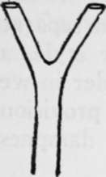
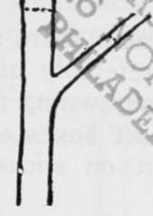
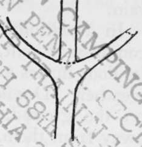
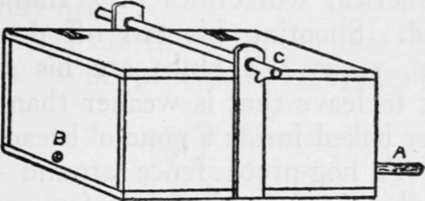

Camp Making. Part 4
Description
This section is from the book "Camping And Woodcraft", by Horace Kephart. Also available from Amazon: Camping and Woodcraft.
Camp Making. Part 4
When Camping with a pack-train, pile the packs neatly together and cover them writh canvas, and similarly pile and protect the saddles, making especially sure that the lash ropes cannot get wet, and that nothing will be buried out of sight, off somewhere by itself, if snow falls during the night. Soldierly system in all such matters pays a big dividend in time and good temper.
Even when stopping overnight, have a place for everything and let everything be in its place. Novices or shiftless folk strew things about ^nd can't find them when needed. That is one reason why it takes them twice as long as it should to make or break camp, and it is why they are forever losing this and that, or leaving them behind and forgetting them till they reach the next stopping place.
If obliged to pitch the tent where there is not good natural drainage, trench it, if the weather be at all dubious. It is miserable business to crawl out into a driving storm at night and dig a ditch by lantern-light — worse still to awake to a realization that trenching is too late to save your soaking possessions. " Make yourself ready in your cabin for the mischance of the hour, if so it hap".
Dining Place
It is wearisome to eat from the ground; and as Thoreau says, " None is so poor that he need sit on a pumpkin — that is shiftlessness." If stopping more than a day in one place, set up a rustic table and benches, away from the tent and near the cooking fire. Drive four stakes into the ground for legs, nail cleats across the ends, and cover the top with boards or straight sticks. If you have no nails, use forked stakes.
By the way, nearly every made-up picture of a camp shows crotches cut like Fig. 109. Why. good artists — why? You may hunt half a day in the woods to find such a natural crotch, and, if you should find it, the thing would be good-for-nothing as a stake, because you couldn't drive it without splitting it. A fork like Fig. no can be found anvwhere; cut it as shown by the dotted lines, and it will drive all right. If somebody is injured and needs a crutch, pick out a sapling with limbs growing opposite, as in Fig. in, cut out the central stem, trim, and shave down.
Fig. 109. Rare Natural Crotch.
Fig. 110. Common Crotch.
Fig. 111. To Make a Crutch.
A comfortable height for the table is 30 inches, for the benches 18 inches. The latter are made in the same way as the table. Three widths of 10-inch boards make a good table top, and one suffices for each bench.
If you have a spare tent fly or tarpaulin, rig it over the dining table as a canopy. If no trees stand convenient for stretching it, set up two forked posts, lay a ridge pole on them, and guy out the sides to similar frames or to whatever may grow handy. To set a long stake, sharpen the butt end, hold the pole vertically, and make a hole in the ground by working the stick up and down as a quarryman does a long drill.
A table, bench, or shelf, can easily be set up wherever two trees grow close enough together. Nail a cross-piece from one to the other, and a similar one at same level on the other side, then cover with straight sticks or pieces of board.
Commissariat
If food is carried in side-opening bags, suspend them from a horizontal pole run irom tree to tree or from forked stakes. A cup< board made from packing boxes can be hung up n the same way, to keep vermin out. If ants are troublesome, the edibles can be hung up by wires, in a place where they will be sheltered from sun and rain.
In a stationary camp there should be a separate commissary tent, preferably of the baker style, as its door makes a good awning to work under in wet weather. Do not set boxes or bags of provisions on the ground, but on sticks, to keep dampness away from them.
Racks or hangers for utensils, dish towels, etc., are improvised in many ways: a bush trimmed with stubs left on, and driven in the ground where if is wanted, inverted crotches nailed to a tree, and so on. Pegs of hard wood whittled to a blunt point can be driven into the trunk of a softwood tree by first making a vertical axe gash at the spot where the peg is to go.
Cold Storage
Butter and milk should not be stored near anything that has a pronounced odor, for they would be tainted. As soon as the camp ground is reached the butter tin or jar should be placed in a net or bag and sunk in the spring or cold brook, the string being tied to the bank so that a freshet may not carry the food away or bury it out of sight. Later, if you stay in that place, a little rock-lined well can be dug near the spring, and covered securely so that 'coons and porcupines cannot plunder it.
Meat and fish may be kept fresh until consumed by digging a hole and putting a packing box in it, surrounding the sides and bottom of the box with six inches or more of gravel, and covering top of box with burlap or something similar. Keep the gravel and the burlap wet, and cover all with wet evergreen boughs.
If you have ice, a refrigerator can be made like the fireless cooker described in Chapter IV; or bore a few holes for drainage in the bottom of a box or barrel, sink it in the ground to its top, and cover with burlap or a blanket.
At a cabin in the Smokies, where I lived alone for three years, I had a spring box like the one shown in Fig. 112, which kept things cool and safe in the warmest weather, yet was easy for me to get into. A short iron pipe at A entered the spring; the box inclined slightly toward the outlet B; pails and jars sat on flat rocks inside; the top was fastened by the round stick C passing through auger holes in the upright cleats.

Continue to: